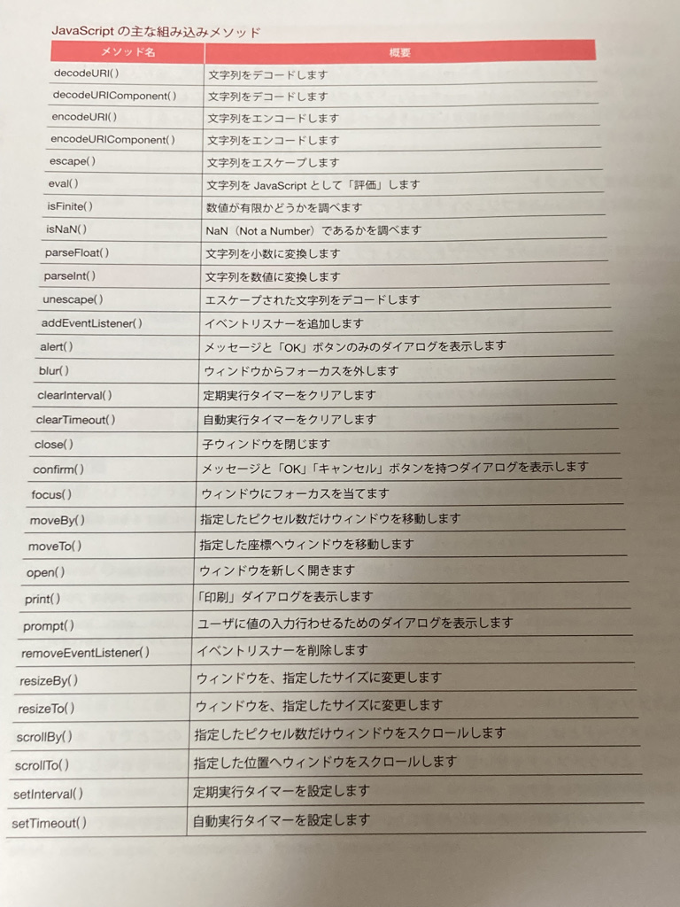

オブジェクトは「ロッカー」
「ロッカー」の各扉にプロパティやらメゾットが入ってる。
ver 変数名 = オブジェクト名.プロパティ；
ver 変数名 = オブジェクト名.メゾット；
↑のように書くとロッカーから取ってきて、それを実行するイメージ
組込みオブジェクト
…既にもうあるオブジェクト（ロッカー）のこと
組込みオブジェクト→①newをつかって生成するもの ②webブラウザが持ってるもの
- Array
- Date
- Function
- Math
- Number
- Object
- RegExp
- String
- XMLHttpRequest…JavascriptからHTTP通信を行うためのオブジェクト
- Document
- Screen…webブラウザを起動しているモニターに関する情報を格納
- Navigator…webブラウザに関する情報を格納
- Location…現在アクセスしているURIについての情報を格納
- Window…webブラウザで実行するJavascriptでのグローバルオブジェクトとなる
組込みメゾット
windowロッカーに既に用意されているメゾットのこと
- decoedURI()…文字列をデコード
- decodeURIComponent()…文字列をデコード
- encodeURI()…文字列をエンコード
- encodeURIComponent…文字列をエンコード
- escape()…文字列をエスケープ
- eval()…文字列をJavascriptとして評価
- isFinite()…数値が有限かどうかを調べる
- isNan()…NaN(not a number)かどうか調べる
- parseFloat()…文字列を少数に変換
- parseInt()…文字列を数値に変換
- unescape()…エスケープされた文字列をデコードする

オブジェクトを自分で作る
var obj=new Object();で自分だけのオブジェクト！
【ex】
var obj=new Object();
obj.apple="これはりんごです"
obj.orange="これはみかんです"
window.document.write(obj.apple);